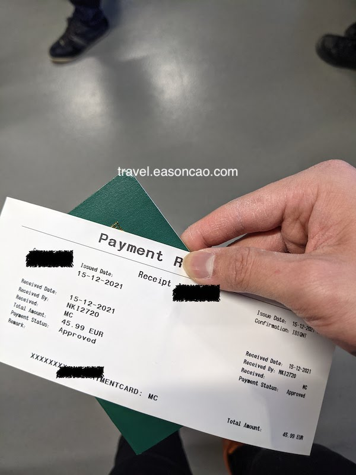

疫情下的芬蘭旅遊 (七)：返程 - 充滿愛與恨的交織
就這樣一路過安檢、閒晃，本以為可以安心的一路回去。未料竟然是開啟另一個愛與恨交織的返程….
愛與恨交織的返程
即將返程的時候，除了前天根據在預約的檢測點完成 COVID 檢測外，為了避免搭飛機不必要的麻煩，我在 Airbnb 也不忘尋找可以列印的店家。(都是多虧 RyanAir)
看來看去，還是決定在就近的圖書館列印我的機票，和有留存一份紙本 COVID 快篩檢驗報告。
列印機票
圖書館八點開，由於深怕太晚到機場太趕，起了個大早算好時間八點左右走到圖書館列印機票。但為了節省時間，我在前一晚上研究了了如何把檔案上傳到圖書館的印表機。
於是，我就在一陣慌亂中成功的在連圖書館員都不太清楚列印流程的情況下將機票印出來了：
真的很感謝芬蘭的福利政策，我一個外國訪客註冊新帳號竟然有免費的列印扣打，完全是拯救我，也不用在那邊花時間跟館員研究或是糾纏要怎麼付錢。(不過話說回來，這都是因為擔心 RyanAir 沒印機票會收錢的奇怪傳言)
天都還沒完全亮，但還是很感謝一切都很順利的沒在車站迷太久的路，搭上前往機場的列車：
就這樣一路過安檢、閒晃，本以為可以安心的一路回去。於是就待在登機門前的我乖乖排在優先登機 (Priority) 通道，未料竟然是開啟另一個愛與恨交織的返程….
照地勤心情收費的行李
本以為 優先登機 (Priority) 的 2 Cabin Bags 是兩個大包嗎，NO NO NO，這麼曖昧不明的 Wording 如果這樣解讀就太天真了：
就在我抵達 RyanAir 登機門開放上機的時刻，我照著隊伍依序拿出護照給地勤查驗。
但是不知道是不是因為地勤發現是一本亞洲來的護照 (這個旅客可以宰)，或是覺得我的背包太突兀，突然冷冷的叫我要想辦法把隨身行李塞進去測量：
我還很輕鬆地說我的行李都是 Cabin Bag 可以放進去的大小，但地勤人員跟我說，我一定要把一個塞成 Small Bag 的大小。我就傻眼了，我知道這一定放不下我當背包客用的背包 (因為那個大小實在是太小了)。不過還是努力的作秀給周遭的旅客看，當然怎麼塞都塞不下，然後冷冷地被地勤告知說你這個要加收行李費用，讓我頭上充滿無法理解的問號。
當下真的是 WHAT THE HECK 在心裡一直狂碎念，這怎麼跟我理解的不一樣，我都為了這個背包多花錢買 Priority 了，好歹你也給我免費托運吧。你們對於沒有買 Priority 的旅客，難道行李架塞不下了每個都要加收、你確定不是另外免費托運1？當下真的是帶著傻眼還有不理解，畢竟前面搭機都沒有遇到這麼雷的事情，而且還是同一家航空，有一種被種族歧視的味道，但是我沒有證據，也許只是自己的一時情緒放大了這種感受。
承受被周圍人用著憐憫的眼神看著我被 Ryan 的地勤人員當肥羊宰，我帶著周遭旅客為我感到的悲痛，化為前進的力量，默默地走向登機門旁的地勤人員，跟他說著我對於這項事情的不理解。相對而言，登機口的地勤人員親切許多：
地勤：Let me check (然後又 call 了剛剛查我包的地勤講了幾句)
地勤：Oh, so you have one bag is not allowed to be onboard.
我：That is really confusing because I purchased priority boarding, which mentioned it has two cabin bag. I was flying with RyanAir to Finland, with same bag, same weight, and I did not get any issue with these bags before. I don’t understand why it is exceeded this time.
地勤：Yeah, you are so lucky… They probably did not check the bags correctly.
地勤：So the priority is one small bag and one cabin bag instead of two cabin bag. Sorry you have to pay 45 euro to check-in this bag.
我真的是傻了，前幾天我一路搭 RyanAir 飛來芬蘭，帶著同樣大小的包，大搖大擺在地勤前排隊過 RyanAir 的登機門都沒有這個狀況 (不然我這段早就在 check-in 前先另外買好託運了，而不是花這種冤望錢)。而且我搭乘 FinnAir 帶著同樣的背包跟袋子，也可以正常搭機，看來，RyanAir 地勤教育訓練對於行李合規的認定看來是不太一致的。
我事後登機看行李艙 Cabin 也不是沒有位子，我的背包也放得下座位下方的空位。不過好吧，既然是這樣解讀，我想航空公司有他們作業的考量，我認了…. 於是就乖乖的付在登機門行李託運的額外費用 (€45.99 euro)。
邊掏出卡刷的同時，我就看著另一個也被當肥羊宰的金髮小姊姊也拿著包過來付錢托運，我們對視了一眼，從眼神中交換彼此的無奈：

我：I have another transit flight in Poland, also is flying with Ryan, so will my luggage be my final destination?
地勤：No, you have to take the bag in Poland before moving to the next flight.
出乎我意料的是，我轉機的時候還得等行李轉盤領完行李才能接下一班飛機 (這 €45.99 換到的服務不得不說有點鳥)。心裡想著還好預留了 3 小時轉機，雖然有點小趕，但應該不是太大的問題。
不過我擔心因為等行李的時間太長，如果又在那邊點機器會卡到轉機流程，還是乖乖的拿出手機，在 App 線上刷下一段已經 check-in 好機票的行李 - €43.05 euro，覺得大失血但也無可奈何。
結果，這買下去真的是我整趟旅途另一個很後悔的操作。
繼續閱讀
- 疫情下的芬蘭旅遊 (一)：忐忑不安的行前準備
- 疫情下的芬蘭旅遊 (二)：有聖誕老公公也有瘋狂的芬蘭阿伯
- 疫情下的芬蘭旅遊 (三)：開往聖誕村的驚悚列車，下一站，羅瓦涅米 Rovaniemi
- 疫情下的芬蘭旅遊 (四)：橫跨北極圈的聖誕老人村 (Santa Claus Village)
- 疫情下的芬蘭旅遊 (五)：亂晃赫爾辛基 (Helsinkin) 的聖誕節
- 疫情下的芬蘭旅遊 (六)：Sisu (希甦)
- 疫情下的芬蘭旅遊 (七)：返程 - 充滿愛與恨的交織
- 疫情下的芬蘭旅遊 (八)：出乎意料的航班和後記